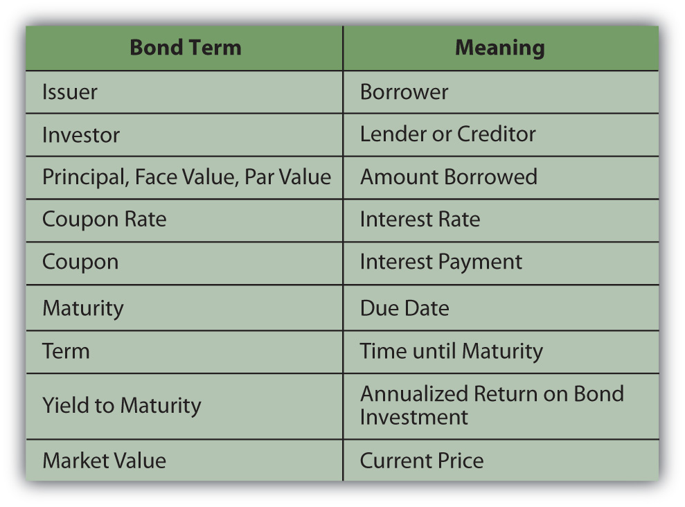
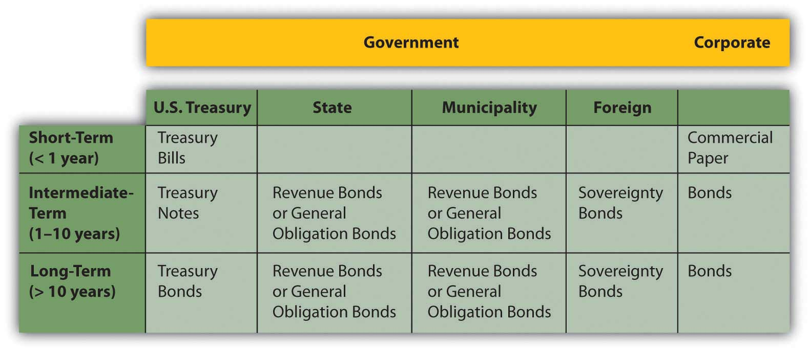
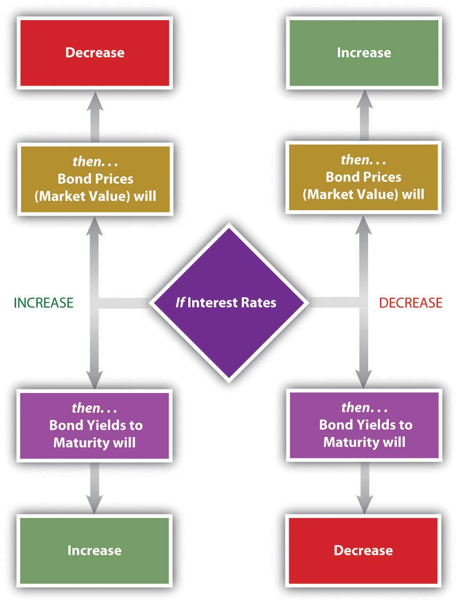
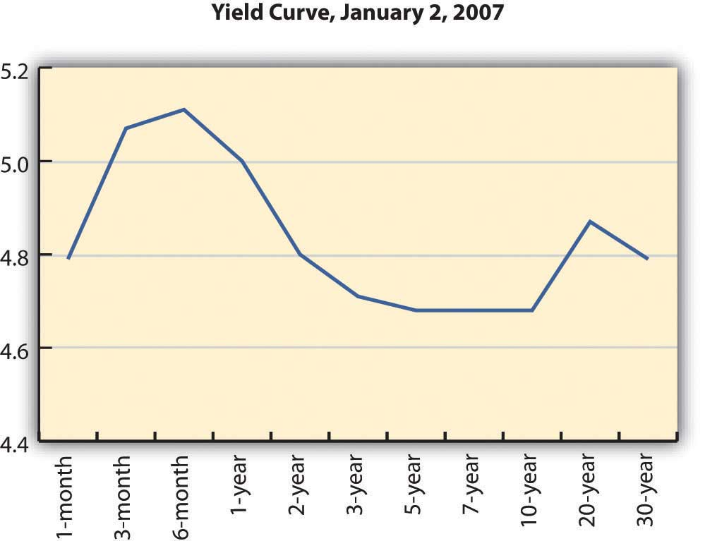
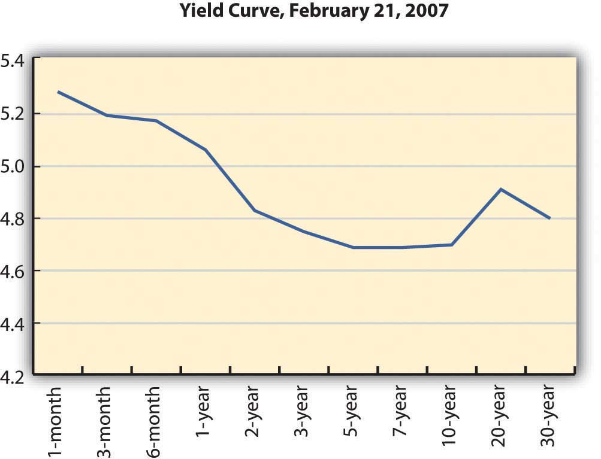

In common parlance, a bond is an affinity between people. In science, that affinity is physically held together by an attraction of atoms. In finance, a bond is a debt agreement, holding lender and borrower together in a shared financial fate.
Investors buy bonds to participate in economic growth as lenders rather than as shareholders, with less risk and a firmer claim on assets. Bonds are issued by different kinds of organizations—by governments and government agencies as well as by corporations—giving investors different kinds of partners in growth.
Since bonds are a different form of capital than stocks, and since bond investments are made in different kinds of borrowers, bonds offer diversification from the stocks in your portfolio. Your use of bonds may change over time, as your risk tolerance or liquidity needs change.
Bonds are a relatively old form of financing. Formalized debt arrangements long preceded corporate structure and the idea of equity (stock) as we know it. Venice issued the first known government bonds of the modern era in 1157,Isadore Barmash, The Self-Made Man (Washington, DC: Beard Books, 2003), 55. while private bonds are cited in British records going back to the thirteenth century.George Burton Adams, The Constitutional History of England (London: H. Holt, 1921), 93. Venice issued bonds to raise funds to finance a Crusade against Constantinople, which included expansion of a shipyard attached to the Venetian Arsenal. (Go to http://en.wikipedia.org/wiki/Venetian_Arsenal to view images.)
In addition to financing government projects, bonds are used by corporations to capitalize growth. Bonds are also a legal arrangement, couched in conditions, obligations, and consequences. As a result of their legal and financial roles, bonds carry a quaint and particular vocabulary. Bonds come in all shapes and sizes to suit the needs of the borrowers and the demands of lenders. Figure 16.1 "Basic Bond Features" lists the descriptive terms for basic bond features.
Figure 16.1 Basic Bond Features
The couponThe interest payment on a bond, specified as a feature of the bond at issuance. is usually paid to the investor twice yearly. It is calculated as a percentage of the face valueFor a bond, the amount to be repaid to the bondholder upon redemption.—amount borrowed—so that the annual coupon = coupon rate × face value. By convention, each individual bond has a face value of $1,000. A corporation issuing a bond to raise $100 million would have to issue 100,000 individual bonds (100,000,000 divided by 1,000). If those bonds pay a 4 percent coupon, a bondholder who owns one of those bonds would receive a coupon of $40 per year (1,000 × 4%), or $20 every six months.
The coupon rateThe interest rate offered on a bond. of interest on the bond may be fixed or floating and may change. A floating rate is usually based on another interest benchmark, such as the U.S. prime rateA benchmark interest rate understood to be the rate that major banks charge corporate borrowers with the least default risk., a widely recognized benchmark of prevailing interest rates.
A zero-coupon bondA bond that has a coupon rate of zero, and therefore a coupon of zero. Its only cash flow return is the principal repayment at maturity. has a coupon rate of zero: it pays no interest and repays only the principal at maturity. A “zero” may be attractive to investors, however, because it can be purchased for much less than its face value. There are deferred coupon bondsBonds whose coupon payments are deferred until a specified time. (also called split-coupon bondsDeferred coupon bonds that pay no interest for a specified period, followed by higher-than-normal interest payments until maturity. and issued below par), which pay no interest for a specified period, followed by higher-than-normal interest payments until maturity. There are also step-up bondsA bond with a floating-rate coupon that is scheduled to increase at specified intervals. that have coupons that increase over time.
The face value, the principal amount borrowed, is paid back at maturity. If the bond is callableA bond that may be redeemed before maturity., it may be redeemed after a specified date but before maturity. A borrower typically “calls” its bonds after prevailing interest rates have fallen, making lower-cost debt available. Borrowers can borrow new, cheaper debt and pay off the older, more expensive debt. As an investor (lender), you would be paid back early, which sounds great, but because interest rates have fallen, you would have trouble finding another bond investment that would pay as high a rate of return.
A convertible bondA bond that may be converted to common stock under specific conditions. is a corporate bond that may be converted into common equity at maturity or after some specified time. If a bond were converted into stock, the bondholder would become a shareholder, assuming more of the company’s risk.
The bond may be secured by collateral, such as property or equipment, sometimes called a mortgage bondA bond secured by a specific asset such as real property or equipment.. If unsecured, or secured only by the “full faith and credit” of the borrower (the borrower’s unconditional commitment to pay principal and interest on the debt), the bond is a debentureA bond secured by only the “full faith and credit” of the borrower and not by any specific asset.. Most bonds are issued as debentures.
A bond specifies if the borrower has more than one bond issue outstanding or more than one set of lenders to repay, which establishes the bond’s seniority in relation to previously issued debt. This “pecking order” determines which lenders will be paid back first in case of default on the debt or bankruptcy. Thus, when the borrower does not meet its coupon obligations, investors holding senior debtA bond issue that has a superior claim in case of bankruptcy. as opposed to subordinated debtA bond issue that has an inferior claim in case of bankruptcy. have less risk of default.
Bonds may also come with covenantsA condition of a loan that restricts the borrower to protect the lender. or conditions on the borrower. Covenants are usually attached to corporate bonds and require the company to maintain certain performance goals during the term of the loan. Those goals are designed to lower default riskThe risk that a borrower will not be able to meet interest obligations or principal repayment. for the lender. Examples of typical covenants are
Corporations issue corporate bonds, usually with maturities of ten, twenty, or thirty years. Corporate bonds tend to be the most “customized,” with features such as callability, conversion, and covenants.
The U.S. government issues Treasury billsBonds issued by the U.S. government with a maturity of less than one year. for short-term borrowing, Treasury notesBonds issued by the U.S. government with a maturity of between one and ten years. for intermediate-term borrowing (longer than one year but less than ten years), and Treasury bondsBonds issued by the U.S. government with a maturity of more than ten years. for long-term borrowing for more than ten years. The federal government also issues Treasury Inflation-Protected Securities (TIPS)Bonds issued by the U.S. government with an adjustable face value designed to protect the bondholder against inflation risk.. TIPS pay a fixed coupon, but the principal adjusts with inflation. At maturity, you are repaid either the original principal or the inflation-adjusted principal, whichever is greater.
State and municipal governments issue revenue bonds or general obligation bonds. A revenue bondA state or municipal bond that will be repaid from revenues of the specific project it is financing. is repaid out of the revenue generated by the project that the debt is financing. For example, toll revenue may secure a debt that finances a highway. A general obligation bondA state or municipal bond secured only by the “full faith and credit” of the issuer. is backed by the state or municipal government, just as a corporate debenture is backed by the corporation.
Interest from state and municipal bondsBonds issued by a city, town or state to finance public projects. The coupon payments may, under certain circumstances, not be subject to federal income tax for the bondholder. (also called “munis”) may not be subject to federal income taxes. Also, if you live in that state or municipality, the interest may not be subject to state and local taxes. The tax exemption differs from bond to bond, so you should be sure to check before you invest. Even if the interest is not taxable, however, any gain (or loss) from the sale of the bond is taxed, so you should not think of munis as “tax-free” bonds.
Foreign corporations and governments issue bonds. You should keep in mind, however, that foreign government defaults are not uncommon. Mexico in 1994, Russia in 1998, and Argentina in 2001 are all recent examples. Foreign corporate or sovereign debt also exposes the bondholder to currency risk, as coupons and principal will be paid in the foreign currency. Figure 16.2 "Bond Issuers and Terms" shows a summary of bonds and their issuers.
Figure 16.2 Bond Issuers and Terms
The volume of capital traded in the bond markets is far greater than what is traded in the stock markets. All sorts of borrowers issue bonds: corporations; national, state and municipal governments; and government agencies. Even small towns issue bonds to finance capital expenditures such as schools, fire stations, and roads. Each kind of bond has its own market.
Private placementAn issuance of bonds through a private deal rather than through the public markets. refers to bonds that are issued in a private sale rather than through the public markets. The investors in privately placed bonds are institutional investors such as insurance companies, endowments, and pension funds.
U.S. Treasury bonds are issued to the primary market through auctions. Participants, usually dealers or institutional investors, bid for the bonds, but no one participant is allowed to buy enough shares to monopolize the secondary market. Individuals can also buy Treasuries directly from the U.S. Treasury through its online service, called TreasuryDirect (http://www.treasurydirect.gov/).TreasuryDirect, http://www.treasurydirect.gov/ (accessed June 13, 2009).
Corporate bonds are traded in over-the-counter transactions through brokers and dealers. Because the details of each bond issue may vary—maturity, coupon rate, callability, convertibility, covenants, and so on—it is hard to directly compare bond values the way stock values are compared. As a result, the corporate bond markets are less transparent to the individual investor.
To provide guidance, rating agenciesAnalysts of bond default risk that assign ratings to bonds. provide bond ratings; that is, they “grade” individual bond issues based on the likelihood of default and thus the risk to the investor. Rating agencies are independent agents that base their ratings on the financial stability of the company, its business strategy, competitive environment, outlook for the industry and the economy—any factors that may affect the company’s ability to meet coupon obligations and pay back debt at maturity.
Ratings agencies such as Fitch Ratings, A. M. Best, Moody’s, and Standard & Poor’s (S&P) are hired by large borrowers to analyze the company and rate its debt. Moody’s also rates government debt. Ratings agencies use an alphabetical system to grade bonds (shown in Figure 16.3 "Bond Ratings") based on the highest-to-lowest rankings of two well-known agencies.
Figure 16.3 Bond Ratings

A plus sign (+) following a rating indicates that it is likely to be upgraded, while a minus sign (−) following a rating indicates that it is likely to be downgraded.
Bonds rated BBB or Baa and above are considered investment grade bondsBonds rated BBB or Baa or higher and considered to carry insignificant default risk., relatively low risk and “safe” for both individual and institutional investors. Bonds rated below BBB or Baa are speculative in that they carry some default risk. These are called speculative grade bondsHigh yield bonds rated BB or Ba or lower and considered to have significant default risk., junk bondsHigh yield bonds rated BB or Ba or lower and considered to have significant default risk., or high-yield bondsBonds rated BB or Ba or lower, considered to have significant default risk.. Because they are riskier, speculative grade bonds need to offer investors a higher return or yield in order to be “priced to sell.”
Although the term “junk bonds” sounds derogatory, not all speculative grade bonds are “worthless” or are issued by “bad” companies. Bonds may receive a speculative rating if their issuers are young companies, in a highly competitive market, or capital intensive, requiring lots of operating capital. Any of those features would make it harder for a company to meet its bond obligations and thus may consign its bonds to a speculative rating. In the 1980s, for example, companies such as CNN and MCI Communications Corporation issued high-yield bonds, which became lucrative investments as the companies grew into successful corporations.
Default risk is the risk that a company won’t have enough cash to meet its interest payments and principal payment at maturity. That risk depends, in turn, on the company’s ability to generate cash, profit, and grow to remain competitive. Bond-rating agencies analyze an issuer’s default risk by studying its economic, industry, and firm-specific environments and estimate its current and future ability to satisfy its debts. The default risk analysis is similar to equity analysis, but bondholders are more concerned with cash flows—cash to pay back the bondholders—and profits rather than profits alone.
Bond ratings can determine the coupon rate the issuer must offer investors to compensate them for default risk. The higher the risk, the higher the coupon must be. Ratings agencies have been criticized recently for not being objective enough in their ratings of the corporations that hire them. Nevertheless, over the years bond ratings have proven to be a reliable guide for bond investors.
Bond features that can determine risk and return include
The U.S. government issues Treasury
State and municipal governments issue
Bond-rating systems do not replace bond analysis, which focuses on bond value. Like any investment, a bond is worth the value of its expected return. That value depends on the amount expected and the certainty of that expectation. To understand bond values, then, is to understand the value of its return and the costs of its risks.
Bonds return two cash flows to their investors: (1) the coupon, or the interest paid at regular intervals, usually twice yearly or yearly, and (2) the repayment of the principal at maturity. The amounts are spelled out in the bond itself. The coupon rate is specified (for a fixed-rate bond) and the face value is the principal to be returned at the stated maturity.
Unlike a stock, for which the cash flows—both the amount and the timing—are “to be determined,” in a bond everything about the cash flows is established at the outset. Any bond feature that makes those cash flows less certain increases the risk to the investor and thus the investor’s return. If the bond has a floating-rate coupon, for example, then there is uncertainty about the amount of the coupon payments. If the bond is callable, there is uncertainty about the number of coupon payments.
Whatever the particular features of a bond, as debt instruments, bonds expose investors to specific risks. What are those risks, and what is their role is defining expectations of returns?
Unlike a stock, a bond’s future cash returns are known with certainty. You know what the coupon will be (for a fixed-rate bond) and you know that at maturity the bond will return its face value. For example, if a bond pays a 4 percent coupon and matures in 2020, you know that every year your will receive $20 twice per year (20 = 4% × 1,000 × ½) until 2020 when you will also receive the $1,000 face value at maturity. You know what you will get and when you will get it. However, you can’t be sure what that will be worth to you when you do. You don’t know what your opportunity cost will be at the time.
Investment returns are quoted as an annual percentage of the amount invested, the rate of return. For a bond, that rate is the yield. Yield is expressed in two ways: the current yield and the yield to maturity. The current yieldThe short-term return on a bond, calculated as the coupon as a percentage of the bond price. is a measure of your bond’s rate of return in the short term, if you buy the bond today and keep it for one year. You can calculate the current yield by looking at the coupon for the year as a percentage of your investment or the current price, which is the market price of the bond.
current yield = annual coupon (interest received, or cash flows) ÷ market value = (coupon rate × face value) ÷ market value.So, if you bought a 4 percent coupon bond, which is selling for $960 today (its market value), and kept it for one year, the current yield would be 40 (annual coupon) ÷ 960 (market value) = 4.1667%. The idea of the current yield is to give you a quick look at your immediate returns (your return for the next year).
In contrast, the yield to maturityThe total return on a bond, assuming it is held to maturity and that coupons may be reinvested at the same rate. (YTM) is a measure of your return if you bought the bond and held it until maturity, waiting to claim the face value. That calculation is a bit more complicated, because it involves the relationship between time and value (Chapter 4 "Evaluating Choices: Time, Risk, and Value"), since the yield is over the long term until the bond matures. You will find bond yield-to-maturity calculators online, and many financial calculators have the formulas preprogrammed.
To continue the example, if you buy a bond for $960 today (2010), you will get $20 every six months until 2020, when you will also get $1,000. Because you are buying the bond for less than its face value, your return will include all the coupon payments ($400 over 10 years) plus a gain of $40 (1,000 − 960 = 40). Over the time until maturity, the bond returns coupons plus a gain. Its yield to maturity is close to 4.5 percent.
Bond prices, their market values, have an inverse relationship to the yield to maturity. As the price goes down, the yield goes up, and as the price goes up, the yield goes down. This makes sense because the payout at maturity is fixed as the face value of the bond ($1,000). Thus, the only way a bond can have a higher rate of return is to have a lower price in the first place.
The yield to maturity is directly related to interest rates in general, so as interest rates increase, bond yields increase, and bond prices fall. As interest rates fall, bond yields fall, and bond prices increase. Figure 16.4 "Bond Prices, Bond Yields, and Interest Rates" shows these relationships.
Figure 16.4 Bond Prices, Bond Yields, and Interest Rates
You can use the yield to maturity to compare bonds to see how good they are at creating returns. This yield holds if you hold the bond until maturity, but you may sell the bond at any time. When you sell the bond before maturity, you may have a gain or a loss, since the market value of the bond may have increased or decreased since you bought it. That gain or loss would be part of your return along with the coupons you have received over the holding period, the period of time that you held the bond.
Your holding period yieldThe annualized return on a bond over the period it is owned. is the annualized rate of return that you receive depending on how long you have held the bond, its gain or loss in market value, and the coupons you received in that period. For example, if you bought the bond for $960 and sold it again for $980 after two years, your return in dollars would be the coupons of $80 ($40 per year × 2 years) plus your gain of $20 ($980 − 960), relative to your original investment of $960. Your holding period yield would be close to 5.2 percent.
The basic risk of bond investing is that the returns—the coupon and the principal repayment (face value)—will not be repaid, or that when they are repaid, they won’t be worth as much as you thought they would be. The risk that the company will be unable to make its payments is default risk—the risk that it will default on the bond. You can estimate default risk by looking at the bond rating as well as the economic, sector, and firm-specific factors that define the company’s soundness.
Part of a bond’s value is that you can expect regular coupon payments in cash. You could spend the money or reinvest it. There is a risk, however, that when you go to reinvest the coupon, you will not find another investment opportunity that will pay as high a return because interest rates and yields have fallen. This is called reinvestment riskThe risk that a change in interest rates during the bond’s term will change the earnings from reinvesting bond coupons.. Your coupons are the amount you thought they would be, but they are not worth as much as you expected, because you cannot earn as much from them.
If interest rates and bond yields have dropped, your fixed-rate bond, which is still paying the now-higher-than-other-bonds coupon, has become more valuable. Its market price has risen. But the only way to realize the gain from the higher price is to sell the bond, and then you won’t have any place to invest the proceeds in other bonds to earn as much return.
Reinvestment risk is one facet of interest rate risk, which arises from the fundamental relationship between bond values and interest rates. Interest rate riskThe risk that a bond’s market value will be affected by a change in interest rates. is the risk that a change in prevailing interest rates will change bond value—that interest rates will rise and the market value of the bond will fall. (If interest rates fell, the bond value would increase, which the investor would not see as a risk.)
Another threat to the value of your coupons and principal repayment is inflation. Inflation riskThe risk that the value of a bond’s returns will be decreased by a decrease in value of the currency of the bond’s denomination. is the risk that your coupons and principal repayment will not be worth as much as you thought, because inflation has decreased the purchasing power or the value of the dollars you receive.
A bond’s features can make it more or less vulnerable to these risks. In general, the longer the term to maturity is, the riskier the bond is. The longer the term is, the greater the probability that the bond will be affected by a change in interest rates, a period of inflation, or a damaging business cycle.
In general, the lower the coupon rate and the smaller the coupon, the more sensitive the bond will be to a change in interest rates. The lower the coupon rate and the smaller the coupon, the more of the bond’s return comes from the repayment of principal, which only happens at maturity. More of your return is deferred until maturity, which also makes it more sensitive to interest rate risk. A bond with a larger coupon provides more liquidity, over the term of the bond, and less exposure to risk. Figure 16.5 "Bond Characteristics and Risks" shows the relationship between bond characteristics and risks.
Figure 16.5 Bond Characteristics and Risks

A zero-coupon bond offers the lowest coupon rate possible: zero. Investors avoid reinvestment risk since the only return—and reinvestment opportunity—comes when the principal is returned at maturity. However, a “zero” is exposed to the maximum interest rate risk, because interest rates will always be higher than its coupon rate of zero. The attraction of a zero is that it can be bought for a very low price.
As a bond investor, you can make better decisions if you understand how the characteristics of bonds affect their risks and yields as you use those yields to compare and choose bonds.
Interest rates affect bond risks and bond returns. If you plan to hold a bond until maturity, interest rates also affect reinvestment risk. If you plan to sell the bond before maturity, you face interest rate risk or the risk of a loss of market value. When you invest in bonds, then, you want to be able to forecast future interest rates.
Investors can get a sense of how interest rates are expected to change in the future by studying the yield curve. The yield curveA graphic depiction of the term structure of interest rates. is a graph of U.S. Treasury securities compared in terms of the yields for bonds of different maturities. U.S. Treasury securities are used because the U.S. government is considered to have no default risk, so that the yields on its bills and bonds reflect only interest rate, reinvestment, and inflation risks—all of which are reflected in expected, future interest rates.
The yield curve illustrates the term structure of interest ratesA comparison of interest rates for bonds of different maturities., or the relationship of interest rates to time. Usually, the yield curve is upward sloping—that is, long-term rates are higher than short-term rates. Long-term rates indicate expected future rates. If the economy is expanding, future interest rates are expected to be higher than current interest rates, because capital is expected to be more productive in the future. Future interest rates will also be higher if there is inflation because lenders will want more interest to make up for the fact that the currency has lost some of its purchasing power. Figure 16.6 "Upward-Sloping Yield Curve" shows an upward-sloping yield curve.
Figure 16.6 Upward-Sloping Yield CurveU.S. Department of the Treasury, “Daily Treasury Yield Curve Rates,” http://www.treasury.gov/resource-center/data-chart-center/interest-rates/Pages/TextView.aspx?data=yieldYear&year=2007 (accessed May 23, 2012).

Depending on economic forecasts, the yield curve can also be flat, as in Figure 16.7 "Flat Yield Curve", or downward sloping, as in Figure 16.8 "Downward-Sloping Yield Curve".
Figure 16.7 Flat Yield CurveU.S. Department of the Treasury, “Daily Treasury Yield Curve Rates,” http://www.treasury.gov/resource-center/data-chart-center/interest-rates/Pages/TextView.aspx?data=yieldYear&year=2007 (accessed May 23, 2012).
Figure 16.8 Downward-Sloping Yield CurveU.S. Department of the Treasury, “Daily Treasury Yield Curve Rates,” http://www.treasury.gov/resource-center/data-chart-center/interest-rates/Pages/TextView.aspx?data=yieldYear&year=2007 (accessed May 23, 2012).
A flat yield curve indicates that future interest rates are expected to be about the same as current interest rates or that capital will be about as productive in the economy as it is now. A downward-sloping yield curve shows that future interest rates are expected to be lower than current rates. This is often interpreted as a signal of a recession, because capital would be less productive in the future if the economy were less productive then.
The yield curve is not perfectly smooth; it changes every day as bonds trade and new prices and new yields are established in the bond markets. It is a widely used indicator of interest rate trends, however. It can be useful to you to know the broad trends in interest rates that the market sees.
For your bond investments, an upward-sloping yield curve indicates that interest rates will go up, which means that bond yields will go up but bond prices will go down. If you are planning to sell your bond in that period of rising interest rates, you may be selling your bond at a loss.
Because of their known coupon and face value, many investors use bonds to invest funds for a specific purpose. For example, suppose you have a child who is eight years old and you want her to be able to go to college in ten years. You might invest in bonds that have ten years until maturity. However, if you invest in bonds that have twenty years until maturity, they will have a higher yield (all else being equal), so you could invest less now.
You could buy the twenty-year bonds but plan to sell them before maturity for a price determined by what interest rates are in ten years (when you sell them). If the yield curve indicates that interest rates will rise over the next ten years, then you could expect your bond price to fall, and you would have a loss when you sell the bond, which would take away from your returns.
In general, rising interest rates mean losses for bondholders who sell before maturity, and falling interest rates mean gains for bondholders who sell before maturity. Unless you are planning to hold bonds until maturity, the yield curve can give you a sense of whether you are more likely to have a gain or loss.
All bonds expose investors to
Bond returns can be measured by yields.
The yield curve may be
Bonds provide more secure income for an investment portfolio, while stocks provide more growth potential. When you include bonds in your portfolio, you do so to have more income and less risk than you would have with just stocks. Bonds also diversify the portfolio. Because debt is so fundamentally different from equity, debt markets and equity markets respond differently to changing economic conditions.
If your main strategic goal of including bonds is diversification, you can choose an active or passive bond selection strategy. As with equities, an active strategy requires individual bond selection, while a passive strategy involves the use of indexing, or investing through a broadly diversified bond index fund or mutual fund in which bonds have already been selected.
The advantage of the passive strategy is its greater diversification and relatively low cost. The advantage of an active strategy is the chance to create gains by finding and taking advantage of market mispricings. An active strategy is difficult for individual investors in bonds, however, because the bond market is less transparent and less liquid than the stock market.
If your main strategic goal of including bonds is to lower the risk of your portfolio, you should keep in mind that bond risk varies. U.S. Treasuries have the least default risk, while U.S. and foreign corporate bonds have the most. Bond ratings can help you to compare default risks.
Another way to look at the effect of default risk on bond prices is to look at spreads. A spreadA difference between two interest rates, quoted in basis points. The most commonly noted spreads are those between Treasury and corporate securities of the same maturity. is the difference between one rate and another. With bonds, the spread generally refers to the difference between one yield to maturity and another. Spreads are measured and quoted in basis points. A basis pointA unit of measure that is one one-hundredth of a percentage point, or 0.01 percent. is one one-hundredth of one percent, or 0.0001 or 0.01 percent.
The most commonly quoted spread is the difference between the yield to maturity for a Treasury bond and a corporate bond with the same term to maturity. Treasury bonds are considered to have no default risk because it is unlikely that the U.S. government will default. Treasuries are exposed to reinvestment, interest rate, and inflation risks, however.
Corporate bonds are exposed to all four types of risk. So the difference between a twenty-year corporate bond and a twenty-year Treasury bond is the difference between a bond with and without default risk. The difference between their yields—the spread—is the additional yield for the investor for taking on default risk. The riskier the corporate bond is, the greater the spread will be.
Spreads generally fluctuate with market trends and with confidence in the economy or expectations of economic cycles. When spreads narrow, the yields on corporate bonds are closer to the yields on Treasuries, indicating that there is less concern with default risk. When spreads widen—as they did in the summer and fall of 2008, when the debt markets seemed suddenly very risky—corporate bondholders worry more about default risk.
As the spread widens, corporate yields rise and/or Treasury yields fall. This means that corporate bond prices (market values) are falling and/or Treasury bond values are rising. This is sometimes referred to as the “flight to quality.” In uncertain times, investors would rather invest in Treasuries than corporate bonds, because of the increased default risk of corporate bonds. As a result, Treasury prices rise (and yields fall) and corporate prices fall (and yields rise).
Longer-term bonds are more exposed to reinvestment, interest rate, and inflation risk than shorter-term bonds. If you are using bonds to achieve diversification, you want to be sure to be diversified among bond maturities. For example, you would want to have some bonds that are short-term (less than one year until maturity), intermediate-term (two to ten years until maturity), and long-term (more than ten years until maturity) in addition to diversifying on the basis of industries and company and perhaps even countries.
Matching strategiesStrategies used to create a bond portfolio that will finance specific funding or liquidity needs at specific times. are used to create a bond portfolio that will finance specific funding needs, such as education, a down payment on a second home, or retirement. If the timing and cash flow amounts of these needs can be predicted, then a matching strategy can be used to support them. This strategy involves matching a “liability” (to yourself, because you “owe” yourself the chance to reach that goal) with an asset, a bond investment. The two most commonly used matching strategies are immunization and cash flow matching.
ImmunizationA bond portfolio strategy designed to “immunize” or protect the portfolio from interest rate risk. is designing a bond portfolio that will achieve a certain rate of return over a specific period of time, based on the idea of balancing interest rate risk and reinvestment risk.
Recall that as interest rates rise, bond values decrease, but reinvested income from bond coupons earns more. As interest rates fall, bond values increase, but reinvested income from bond coupons decreases. Immunization is the idea of choosing a portfolio of bonds such that the exposure to interest rate risk is exactly offset by the exposure to reinvestment risk for a certain period of time, thus guaranteeing a minimum return over that period.John L. Maginn, Donald L. Tuttle, Jerald E. Pinto, and Dennis W. McLeavey, eds., Managing Investment Portfolios: A Dynamic Process, 3rd ed. (Charlottesville, VA: CFA Institute, 2007).
In other words, the interest rate risk and the reinvestment risk cancel each other out, and the investor is left with a guaranteed return. You would use this kind of strategy when you had a liquidity need with a deadline, for example, to fund a child’s higher education.
Cash flow matchingA strategy of investing in bonds with maturities and face values that match anticipated cash flow amounts and timing., also called a dedication strategy, is an alternative to immunization. It involves choosing bonds that match your anticipated cash flow needs by having maturities that coincide with the timing of those needs. For example, if you will need $50,000 for travel in twenty years, you could buy bonds with a face value of $50,000 and a maturity of twenty years. If you hold the bonds to maturity, their face value provides the amount of cash flow you need, and you don’t have to worry about interest rate or reinvestment risk. You can plan on having $50,000 in twenty years, barring any default.
If you had the $50,000 now, you could just stuff it under your mattress or save it in a savings account. But buying a bond has two advantages: (1) you may be able to buy the bond for less than $50,000 now, requiring less upfront investment and (2) over the next twenty years, the bond will also pay coupons at a higher rate than you could earn with a savings account or under your mattress.
If you will need different cash flows at different times, you can use cash flow matching for each one. When cash flow matching is used to create a steady stream of regular cash flows, it is called bond ladderingA strategy of cash flow matching to create a series of regular cash flows from bond investments.. You invest in bonds of different maturities, such that you would have one bond maturing and providing cash flow in each period (like the CD laddering discussed in Chapter 7 "Financial Management").
Strategies such as immunization and cash flow matching are designed to manage interest rate and reinvestment risk to minimize their effects on your portfolio’s goals. Since you are pursuing an active strategy by selecting individual bonds, you must also consider transaction costs and the tax consequences of your gain (or loss) at maturity and their effects on your target cash flows.
Bonds most commonly are used to reduce portfolio risk. Typically, as your risk tolerance decreases with age, you will include more bonds in your portfolio, shifting its weight from stocks—with more growth potential—to bonds, with more income and less risk. This change in the weighting of portfolio assets usually begins as you get closer to retirement.
For years, the conventional wisdom was that you should have the same percentage of your portfolio invested in bonds as your age, so that when you are thirty, you have 30 percent of your portfolio in bonds; when you are fifty, you have 50 percent of your portfolio in bonds, and so on. That wisdom is being questioned now, however, because while bonds are lower risk, they also lower growth potential. Today, since more people can expect to live much longer past retirement age, they run a real risk of outliving their funds if they invest as conservatively as the conventional wisdom suggests.
It is still true nevertheless that for most people, risk tolerance changes with age, and your investment in bonds should reflect that change.
Diversification can be achieved
Matching strategies to minimize interest rate and reinvestment risks can include